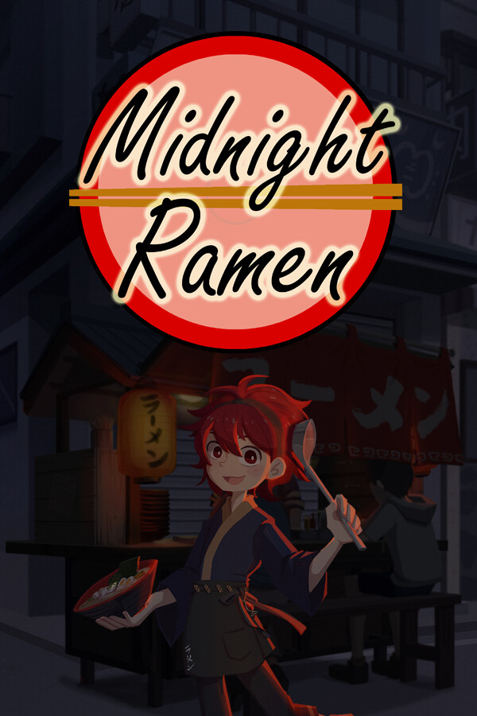

Midnight Ramen 深夜拉麵 Demo
Midnight Ramen 深夜拉麵 Demo
Details
|  | |
| Playtime | Not Played |
| Last Activity | Never |
| Added | 2024-06-11 0:33:57 |
| Modified | 2025-10-02 9:32:35 |
| Completion Status | Abandoned |
| Library | Steam |
| Source | Steam |
| Platform | PC (Windows) |
| Release Date | |
| Community Score | |
| Critic Score | |
| User Score | |
| Genre | |
| Developer | |
| Publisher | |
| Feature | |
| Links | |
| Tag | 2D Atmospheric Cartoon Cartoony Casual Conversation Cooking Emotional Immersive Sim Indie Interactive Fiction JRPG Lore-Rich Modern Relaxing RPG Simulation Singleplayer Story Rich Visual Novel |
Description
Trigger Warning
This game contains some heavy themes, including topics related to death, loss, and suicide. If you are currently feeling sad or have recently experienced similar situations, we recommend that you wait until you feel better before playing.
----------------------
"Midnight Ramen" is a narrative dialogue game inspired by titles such as VA-11 Hall-A: Cyberpunk Bartender Action and Coffee Talk, and is developed by the newly-established Cointinue Games studio.
In this game, players take on the role of a ramen stall owner and his apprentice Homura, operates a stand that only opens late at night, as well as. Together they work to run their stand, feed their customers, and help them solve their problems.
✦Cook Ramen✦

Making ramen is not as easy as it sounds. Customers each have their own preferences and, in order to satisfy them, players must combine the different types of broth, noodles, toppings and seasonings in just the right ways!
✦Chat with customers✦

The customers who come to your stand aren't just burdened by hunger, but by their personal thoughts and troubles. Besides serving them meals, try to have a conversation with them, and help them to resolve the challenges they face!
✦An unusually ordinary life✦

Your life at the ramen stand might seem ordinary and low-key. But beneath the surface lies an extraordinary secret...
---------------
Music licensing thanks
Pillars Of Creation by Purrple Cat
Silent Wood by Purrple Cat
Creative Commons / Attribution-ShareAlike 3.0 Unported (CC BY-SA 3.0)
Music promoted by Free Stock Music